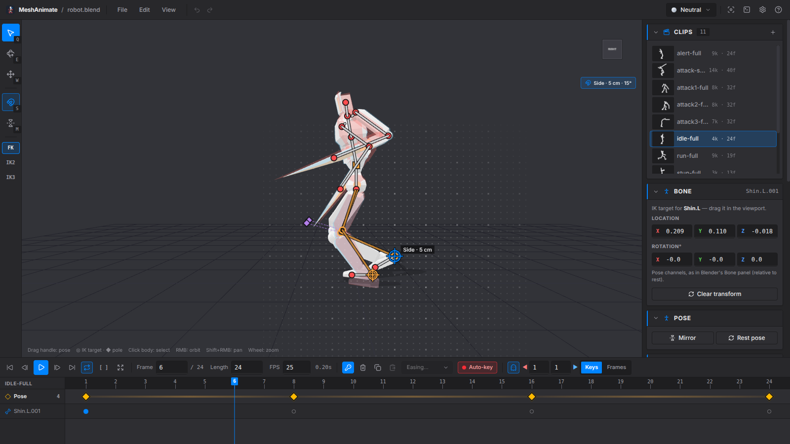
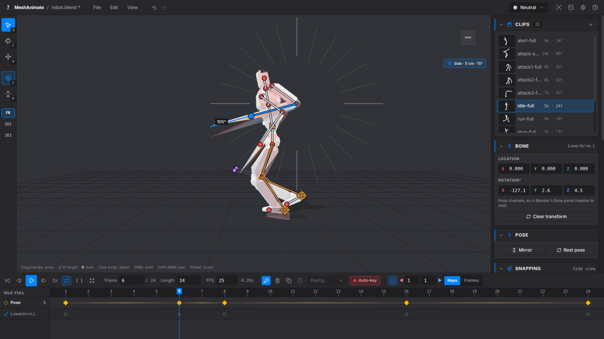
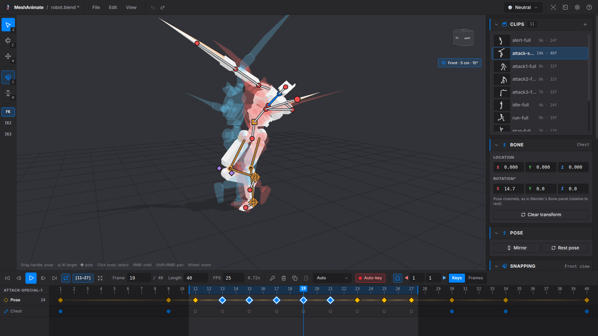
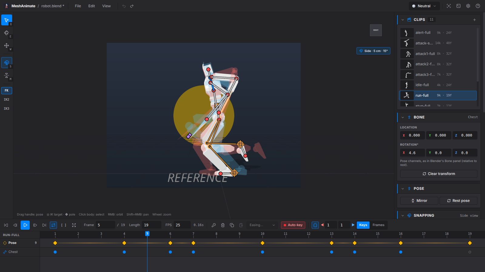

Grab a bone. Drag it. Key it.
Pose-to-pose animation for rigged Blender characters, like Pivot. Drag bones to pose them, and save your animation back into the .blend.

Video
A one-minute walkthrough: open a .blend, make a walk cycle, and save it.
Features
Pose, move to another frame, pose again.
Pose by dragging
Each bone has a handle at its end. Drag it to move the bone. The orange square moves the whole rig. Rotate and move tools are there for fine control.
IK
Limbs that use Blender IK are posed by dragging the hand or foot. Poles point the knee and elbow. The result matches Blender.
Onion skin
See the poses before and after the current frame as ghosts. You can also show the first frame as a ghost at all times.
Timeline
One row of keys for the whole pose. Drag keys to move them, box-select, set easing, and loop part of a clip.
Snapping
In front, side or top view, handles snap to a grid and bones turn in fixed steps.
Walk cycles and reference
Mirror a pose, or key the mirrored pose half a cycle later. Put an image or video behind the model.
Screenshots
The app with a sample robot rig.




Saving
MeshAnimate uses Blender to open and save .blend files.
- Backups. Each save first copies the file to
.meshanimate-backups/next to it. The last 20 copies are kept. - Only your changes. Only the actions and bones you changed are saved. The rest of the file is not touched.
- Normal Blender actions. New actions get a fake user and their own NLA track. Renaming a clip renames its track.
- Plays like Blender. Playback uses the same curves and easing as Blender.
- Outside changes. If you save the file in Blender while it's open here, MeshAnimate reloads it. If you have unsaved work, it asks whether to merge.
Shortcuts
Press ? in the app for the full list.
| Space | Play / pause |
| ← → | Previous / next frame |
| Shift+← → | Previous / next key |
| K | Key the current pose |
| M | Mirror pose |
| Shift+M | Mirror to half-cycle |
| S | Snapping on / off (hold Ctrl to switch it for one drag) |
| Num 1 3 7 | Front / side / top view (Ctrl: opposite side) |
| [ ] | Preview range start / end |
| \ | Clear preview range |
| Q E W | Pose / rotate / move tool |
| O | Onion skin |
| Shift+O | First-frame ghost |
| Ctrl+S | Save into the .blend |
Requirements
You need Blender installed (tested with 5.2). MeshAnimate finds it on its own, or you can set the path in Preferences. Your .blend needs an armature. Skinned meshes and parts parented to bones both work.
bun install # or npm install bun run dev # run with hot reload bun run test # unit tests bun run build:linux # or build:win / build:mac